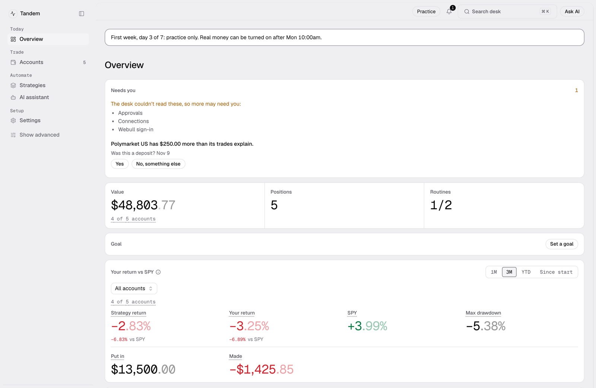

Tandem
A hands-off copy-trading desk for stocks, options, prediction markets and crypto that runs on your Mac.

- Version
- 1.0.4
- Size
- 181.9 MB
- Security
- Signed and notarized by Apple
- Works on
- Apple silicon Macs, macOS 12 or later
- SHA-256
e8642332cca5dc59fe7fa3a10fd07ba994128698090418b561a32dfc37d3dace
Before your install day
Some accounts take a day or two to approve. Do these first, so install day is only clicks.
- Apply for Webull's Trading API. Approval takes about 1 to 2 business days. How it works
- Open the Webull crypto account.
- Create your Kalshi and Polymarket US accounts.
- Install the free ntfy app on your iPhone. The desk uses it to send alerts.
A step-by-step version is in Before install day.
What stays on your Mac
Your data and your keys stay on your Mac. Tandem talks only to your trading accounts, to the AI app if you connect one, and to ntfy for alerts.
Help
- Contact: Ader, Monchera · contact@monchera.com
- Quick start
- Terms and safety
What's new
- Settings is one page with one menu on the left. - Adding an account starts with four venue cards; you choose practice or real in the same steps. - A short terms screen shows once. After that, one slim line reminds you until you accept. - Presets open as a catalog of cards. - The AI assistant page is the chat, with the account chosen next to the message box. - Webull crypto is found on your saved Webull connection. - Your return no longer goes blank after the Mac was off for a few days. It counts across the gap and says how many days were not recorded. - A monthly statement starts at the last close before the 1st of its month. - The tax export lists crypto as crypto, keeps its decimals, and does not run the wash-sale estimate on it. - Settings, About lists one notice for the dashboard's open-source libraries and says where the Python licences are.